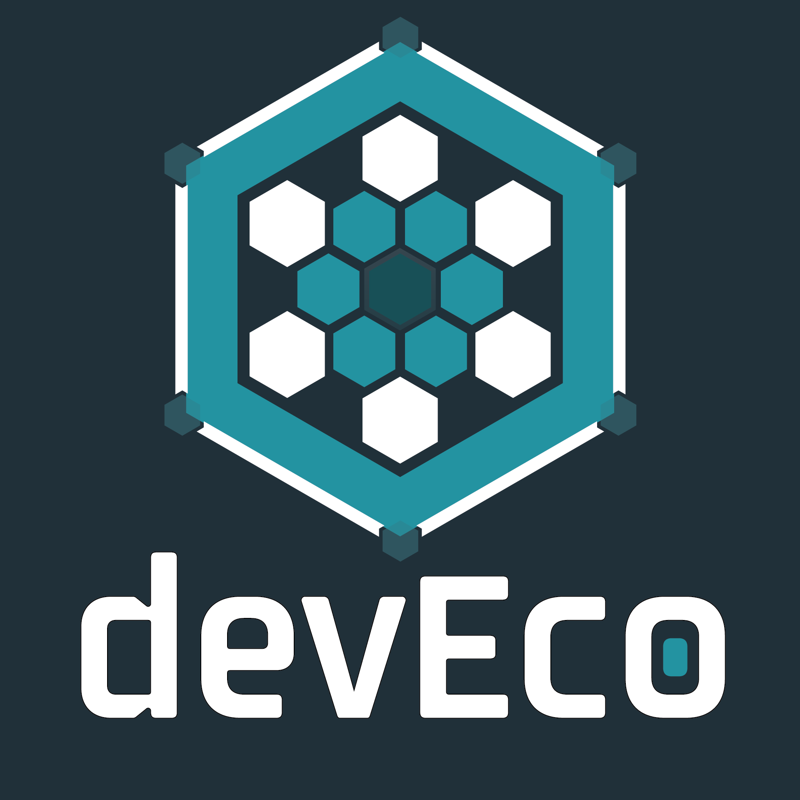

Built By Developers | For Developers
Our mission is to cultivate a vibrant and engaging community where developers connect, learn, and innovate, guided by transparency, shared ownership, and open collaboration.
Join Us

devEco Highlights
- Collaborative Community Join a global network of developers, engineers, and technologists eager to share ideas, solve problems, and innovate together.
- Resources & Perks Access tools, training, software licenses, and educational credits (when available)—designed to help you sharpen your skills and build your projects.
- Network with Industry Experts Connect with thought leaders, influencers, and experienced developers through meetups, AMAs, and special interest groups.
- Community-Driven Initiatives Shape the ecosystem with your input—members have partial ownership, contributing ideas, leading projects, and influencing events.
- Global Reach, Local Impact Engage with both global and local communities, from online meetups to regional events, fostering meaningful connections worldwide.
- Sustained by the Community, for the Community Every dollar raised goes back into the ecosystem—supporting events, giveaways, tools, and opportunities that directly benefit members.
- Developer-Focused Discord Hub Access an active Discord server with forums, SIGs, and gamified channels designed to make every interaction engaging and productive.
- Engaging Events & Challenges Participate in meetups, hackathons, and technical partner challenges that inspire growth and connect you with like-minded professionals.
- Inclusive & Developer-First Culture Be yourself in an open, welcoming environment where everyone's voice matters and innovation thrives through diversity and shared knowledge.
- Cross-Technology Support Explore and collaborate across a range of domains, from software to hardware, cloud to embedded systems, and beyond.
- Mentorship & Learning Opportunities Find mentors or become one—our ecosystem values growth through teaching, with structured mentorship programs and peer learning groups.
- Open Source and Innovation-Focused Build, contribute, and collaborate on open-source projects, staying on the cutting edge of technological trends and advancements.
- Flexible Engagement Levels Whether you're looking for deep involvement or casual participation, devEco meets you where you are, with no pressure to overcommit.
- Inclusive Governance and Moderation Enjoy a safe, inclusive space governed by clear rules and fair moderation, ensuring all members feel respected and supported.
Benefits of the devEco
- 💎 Contribute to Something Bigger Be part of an evolving movement where every contribution helps shape the future of technology beyond what any one developer can achieve alone.
- 🤘 Collaborate with Esteemed Developers (Tech Rock Stars) Work alongside influential developers, industry experts, and thought leaders from around the world—gaining insights and building connections with top talent.
- 📅 Exclusive Access to Events, Meetups, and Hackathons Attend bi-weekly meetups, online events, and hackathons that offer unique networking opportunities, mentorship, and hands-on collaboration.
- 🏫 Mentorship and Learning Opportunities Find mentors or share your expertise with others—our mentorship programs create a cycle of continuous learning and growth for all members.
- 🧐 Opportunities for Thought Leadership Host webinars, write blogs, or lead discussions—establish yourself as a leader within the ecosystem and beyond.
- 🧾 A Developer-First Discord Hub for Networking and Collaboration Access our active Discord server to engage in forums, participate in SIGs, and collaborate in real-time with developers across disciplines.
- 📚 Endless Opportunities to Learn New Skills and Technologies Engage with diverse technologies, from cloud and embedded systems to machine learning and hardware—broadening your technical horizons.
- 🌐 Access to an Ecosystem of Technical Communities Engage with multiple technical communities under one roof, covering a wide range of technologies and special interest groups—expanding your knowledge and network.
- 🤝 Opportunities to Work with Industry Partners Collaborate on projects with tech companies, open-source foundations, and organizations looking to partner with our members on real-world challenges.
- 🛠️ Resources and Tools to Accelerate Your Growth Get access to software licenses, hardware, educational credits, development tools, and other resources to enhance your skills and projects.
- 🏛️ Community-Led Initiatives and Open Governance Play a key role in shaping community goals, events, and initiatives—our open governance model ensures every voice is heard.
- 🔓 Support for Open-Source Contributions Get involved in open-source projects with access to support, contributors, and real-world problem-solving opportunities.
- 🌎 Global Reach with Local Impact Connect with a worldwide community, while also having opportunities to participate in regional meetups and localized events.
- 📈 Give Back to the Community While Growing Your Career As devEco reinvests all funds into events, tools, and perks for members, your involvement supports not only your growth but the growth of the entire community.
devEco FAQs
Haven't found what you're looking for? Join us on Discord!
What is the Developer Ecosystem (devEco)?
devEco is a global network of interconnected technical communities built by developers, for developers. It offers a collaborative space for learning, building, and growing together, with access to events, resources, mentorship, and industry partnerships.
Who can join devEco?
Anyone with a passion for technology and development is welcome to join! Whether you're a seasoned developer or just starting out, devEco offers opportunities for all skill levels.
What makes devEco different from other communities?
devEco is not just one community—it's an ecosystem of technical communities. We promote cross-discipline collaboration, open-source principles, and community-driven initiatives, offering a space where every contribution matters.
What are the benefits of joining devEco?
As a member, you'll have access to
- Collaboration with industry experts and developers from around the world
- Opportunities to work on real-world projects with partners
- Mentorship programs and professional development resources
- Badges, achievements, and a gamified experience
- Open governance where your voice shapes the community's future
- And so much more…
- Exclusive events, meetups, and hackathons
How do I join devEco?
Its simple! Just sign up here and start exploring the community. Once you've joined, connect with other members on our Discord server and participate in events and challenges.
Does devEco have an open-source focus?
Yes! Our community is built on open-source principles of transparency, collaboration, and shared ownership. Members can contribute to open-source projects or lead new initiatives within the ecosystem.
What kinds of events does devEco host?
We host bi-weekly virtual meetups, hackathons, technical workshops, and AMAs (Ask Me Anything) with industry leaders. Our events provide a great way to network, learn new skills, and showcase your work.
Can I collaborate with companies and partners through devEco?
Absolutely! devEco offers opportunities to work on projects with tech companies, industry partners, and other organizations looking for developer talent and collaboration.
How does devEco ensure a positive and inclusive environment?
We follow clear community guidelines to maintain a safe, welcoming space for all members. Our moderators are committed to upholding these standards, and we encourage respectful interactions at all times.
What happens to funds raised by the community?
All proceeds go directly back into the community, supporting events, giveaways, tools, training, and other initiatives that benefit our members.
How do I get involved in leading a project or initiative?
We encourage community-led efforts! Once you join, you can propose projects, participate in open governance discussions, or join special interest groups (SIGs) aligned with your interests.
Is there a cost to join devEco?
Joining devEco is free! Some events or resources may have optional fees, but we strive to keep most offerings accessible to everyone.
How do I connect with other members?
Our primary hub for interaction is the devEco Discord server, where you can engage in forums, chat with members, join SIGs, and participate in live events.
Where can I find help if I have questions?
If you need assistance, check out the FAQ/Help forum on our Discord server or contact a moderator directly through the server.